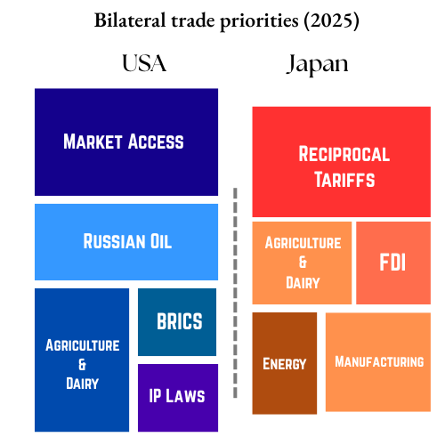

US-India trade summary (2024)
In 2024, US goods imports from India were ~$87.4 billion, representing ~2.6 % of total US imports. US imports from India (goods + services) were ~$77.52 billion in 2024, making up ~ 17.73 % of India’s total exports. US exports to India of $41.8 billion represent ~6.04 % of India’s total imports US goods exports to India ~$41.8 b constitute ~1.9 % of US total exports. Including services, bilateral trade reached ~$83 b in 2024.
US- India Trade: Key sectors
India → US Goods: pharmaceuticals, IT hardware/equipment, apparel/textiles, gems & jewelry
India → US Services: IT & business process outsourcing, travel, education (~$41 b of services exports)
US → India Goods: mineral fuels & oils, aerospace products (e.g. defense aircraft), machinery, chemicals, auto parts
US → India Services: technology/business services, professional, education/travel (biservices surplus)
Negotiation timeline
Feb 13
- Trump announces reciprocal Tariffs against India (3-hours before Modi’s visit).
- PM Modi visits Washington; announces “Mission 500” and tentative energy/defence deals; bilateral trade doubling goal set.
March 28–30: India offers tariff cuts on bourbon, nuts, lentils; refuses cuts on dairy, rice, wheat; seeks reduction in auto/chemical tariffs.
Active Tariffs: 25% reciprocal
April 2: US applies 26–27 % ‘Liberation Day’ tariffs on India; India delays tariff implementation and enters technical talks.
April 8: USTR places India again on Priority Watch List for IP issues in Special 301 report.
April 21-24: US Vice President JD Vance visit.
- Hopes of deal by early July.
- 10 (April)- 15% (June) tariff expected.
Active Tariffs: 25% reciprocal + 26%
May 17: Minister of Commerce and Industry of India Piyush Goyal visits Washington D.C.
India offers:
- Most-Favoured Nation (MFN) status to future proof India-US trade.
- 0 tariff on industrial goods (40% of India’s exports from US).
- Gradual tariff reduction on Auto and alcohol
- Higher energy purchase from US.
India asks
- Maintain tariffs and regulations on Agriculture and Dairy.
- Generalised System of Preferences (GSP) status renewal (March 2019) (lower priority).
- Remove reciprocal tariffs.
- Attracting China de-coupled investment (early priority).
US asks:
- Access to Agro-Dairy markets (easing SPS or Sanitary and phytosanitary measures measures).
- Military-defence sales to India (5th gen. fighters).
- Energy sales to India.
- Ease of non-tariff barriers.
JUNE 26:
- India asks reciprocal tariff + steel and auto part tariffs roll-off.
- US asks commitment on import cuts on farm goods + non-tariff barriers.
India a broader agreement than a interim deal (unlike China’s 90-day pause)
July 29: US Trade delegation announces a visit to India on August 25 for next rounds of trade talks.
July 30: Trump announces 25% tariff effective Aug 1; escalates again citing Russia/oil ties.
Active Tariffs:
General10%; Steel, autos, electronics: 25%; 25% (or higher) from August 1Aug 6: Executive order raises tariff to 50% (Aug, 27); India vows possible retaliation; talks considered collapsed but limited engagement continues
Aug 16: Commerce Secretary Sunil Barthwal confirms that US Trade Delegation visit on August 25-29 to be postponed or called off
Aug 22: White House economic advisor Peter Navarro ramps up his attacks over India’s Russian oil exportsAug 27: 50% General Tariffs on Indian imports to the US come into effect
Active Tariffs
• General 50%
• Steel, autos, electronics: 50%
• Pharma, semiconductors, energy: 0% (exempted)
• Grace for in-transit goods until Oct 5: 25%
Negotiations stalledSept 10: Pres. Trump announces that US and India have restarted their trade negotiations
Sept 11: Sergio Gor confirms that Pres. Trump has invited Piyush Goyal to the US for trade talks during his Nomination hearing as nominee for US Ambassador to India.
Sept 12: Piyush Goyal announces that the first phase of the deal is likely to be finalised by early November
Sept 15: U.S. Assistant Trade Representative Brendan Lynch meets Indian officials in New Delhi to accelerate bilateral trade talks aimed at resolving ongoing tariff disputes, with both sides agreeing to intensify discussions on a mutually beneficial trade deal amid punitive U.S. duties on Indian exports.
Sept 20: Commerce Minister Piyush Goyal announces his upcoming visit to Washington to push forward stalled trade negotiations, particularly on tariff relief, while noting that U.S. actions like new visa fees and trade irritants have intensified pressure.
Sept 26: Indian Commerce Ministry reports that talks in Washington were “constructive” and both governments agree to continue negotiations, with India seeking removal of U.S. tariffs linked to Russia oil purchases.
Active Tariffs
• General 50%
• Steel, autos, electronics: 50%
• Pharma, semiconductors, energy: 0% (exempted)
• Grace for in-transit goods until Oct 5: 25%
Negotiations re-startedSept 30- Oct 3: Piyush Goyal visits USA engaging with USTR and industry stakeholders.
Oct 5: Grace period for in-transit goods expire.
Oct 13: New Delhi pledges increased purchases of U.S. energy and gas resources in forthcoming talks to address Washington’s concerns over Indian Russian oil imports, aiming to break the logjam and advance the trade deal negotiation.
Oct 20: President Trump publicly reiterates that negotiations are ongoing but warns that unless India curbs Russian oil purchases and increases U.S. market access, punitive tariffs will remain, maintaining a hard stance on linkage between energy and trade concessions.
Oct 22: Reports surface that India and the U.S. are nearing agreement on tariff reductions to around 15–16 percent and that India may pledge more market openings for U.S. agricultural goods, underscoring progress in negotiation talks.
Oct 24: Following U.S. sanctions on Russian oil firms Rosneft and Lukoil, major Indian refiners announce cuts to Russian crude purchases, a move seen as potentially removing a key sticking point in the trade negotiations.
Active Tariffs
• General 50%
• Steel, autos, electronics: 50%
• Pharma, semiconductors, energy: 0% (exempted)
• Grace for in-transit goods expired: 25%
Negotiations continue with strain over Russia-oilNov 11: President Trump says the U.S. is “getting close” to a trade deal with India, boosting sentiment among exporters and investors after months of tariff-driven tensions.
Nov 12: The Indian government approves a ₹450.6 billion (~$5.1 billion) export support package for sectors hit by U.S. tariffs, while New Delhi aims for potential tariff relief through a trade deal.
Nov 16: President Trump exempts more than 200 food and agricultural products (e.g., tea, coffee, spices) from punitive tariffs, offering partial relief to Indian exporters and signalling flexibility within stalled negotiations.
Nov 20: Indian sources state that domestic export resilience and lower-than-expected losses give India leverage, expecting eventual rollback of 50 % U.S. tariffs and parity to roughly 15 %, balanced with India’s own protective measures.
Active Tariffs
• General 50%
• Steel, autos, electronics: 50%
• Pharma, semiconductors, energy: 0% (exempted)
• Threats of tariff hikes on agricultural goods
Negotiations continueDec 2: President Trump threatens tariff hikes on India’s rice exports to the U.S. over “dumping” allegations.
Dec 8: Deputy U.S. Trade Representative Rick Switzer schedules a visit to India on 10–11 December to advance discussions toward resolving punitive tariff disputes and working toward a comprehensive bilateral deal.
Dec 11: PM Modi speaks by phone with President Trump in their third call since the U.S. tariff hikes, reaffirming efforts to resolve trade and economic issues.
Dec 12: Russian President Vladimir Putin publicly pledges to urge President Trump to scrap penal tariffs tied to Indian Russian oil imports.
Dec 13: U.S. lawmakers urge removal of the 50 % Trump-era tariffs on Indian imports.
India-US Bilateral Trade priorities

Understanding USA’s Priorities
United States of America would strongly aim to further its ‘America First’ approach with the aims of expanding its access to the Indian market- the largest market in the world in terms of population. US would also hope to use this opportunity to weaken Russia and strengthen its position is Ukraine ceasefire negotiations. US would also oppose India’s role as a BRICS country, which is seen as tentative threat to the USD under Donald Trump. US would like to thus break the status quo and seek stronger reciprocity from India across several sectors.
Priorities
- India’s purchase of Russian oil → Tariffs first at 25 %, later raised to 50 % in Aug 2025; a key flashpoint tied to geopolitical pressure behind the promised Ukraine ceasefire by bringing Russian oil economy under pressure
- India’s high tariffs & Non‑Tariff Barriers (NTBs) → USTR flags Indian duty rates (e.g. on steel, dairy), licensing regimes, data-localisation rules
- Agriculture & dairy access → US push to open India’s sensitive sectors; refusal became major stall point
- Reciprocal tariff threats & implementation → US created escalation leverage via 26% reciprocal tariffs and threats of more
- IP & digital trade concerns → India placed on USTR’s 2025 Special 301 Priority Watch List; data rules, biotech approvals criticised
- Auto comp, Steel and Aluminium
- GSP, visas, immigration.
Understanding India’s Priorities
India hopes to maintain status quo and continue the growing trade between the countries. India strongly supports a siloed approach to trade distanced from geopolitics, and industrial disputes in IP, subsidies and domestic protectionism. India is strongly focused on principles of ‘Atmanirbhar Bharat’ and ‘Make in India’ with the hopes of attracting more FDI into India.
Priorities
- Protecting agriculture & dairy sectors → Firm refusal to grant access or tariff cuts in these sensitive sectors, widespread domestic backlash if compromised
- FDI: attracting tech, manufacturing FDI from MNCs that are de-coupling from China (Apple)
- Energy Sovereignty: Maintaining its strategic autonomy, especially in relation to its Russian oil trade
- Removal of Reciprocal Tariffs
- Reach an broader agreement than an interim deal
- Defence imports from US
- Energy imports from US
- Easing tariffs on industrial goods (40% of India’s imports from US)
- Gradual reduction of Auto parts & Alcohol tariffs
- Opposing US demands on IP & digital norms → Criticism on being on Priority Watch List; concerns over sovereignty on data/digital policy.
References:
- USTR Priority watch list
- US Reciprocal tariffs, Feb 2025
- Mission 500, Feb 2025
- https://www.newindianexpress.com/nation/2025/Feb/14/india-us-agree-to-start-negotiations-on-reciprocal-tariff-foreign-secretary
- https://timesofindia.indiatimes.com/business/india-business/bilateral-trade-agreement-with-us-likely-to-be-finalised-by-end-of-the-year-piyush-goyal/articleshow/118308465.cms
- https://twn.my/title2/wto.info/2025/ti250207.htm
- https://indianexpress.com/article/india/us-bilateral-trade-modi-trump-agreement-9835497/
- https://economictimes.indiatimes.com/news/economy/foreign-trade/india-us-to-finalise-broad-contours-of-proposed-trade-agreement/articleshow/118330833.cms?from=mdr
- https://www.mea.gov.in/bilateral-documents.htm?dtl/39066/India++US+Joint+Statement+February+13+2025
- https://archive.is/20250806072842/https://www.reuters.com/world/india/how-india-us-trade-talks-unravelled-2025-08-06/
- https://archive.is/20250806042358/https://www.reuters.com/world/india/missed-signals-lost-deal-how-india-us-trade-talks-collapsed-2025-08-06/
- https://archive.is/pbTqy
- https://www.livemint.com/economy/donald-trump-us-tariff-duty-india-explained-faqs-timeline-structure-sectors-impact-cost-trade-exemptions-economy-news-11754554955632.html
- https://www.livemint.com/economy/usindia-tariff-timeline-from-tariff-king-to-dead-economy-how-modi-and-donald-trump-all-fell-apart-11754562502677.html
- https://www.cnbc.com/2025/08/17/us-delegation-india-visit-called-off-as-trade-tensions-simmer-.html
- https://www.thehindu.com/news/national/us-team-to-visit-india-on-august-25-for-next-round-of-talks-for-trade-pact/article69868994.ece
- https://indianexpress.com/article/india/us-trump-tariff-india-live-updates-10211697/